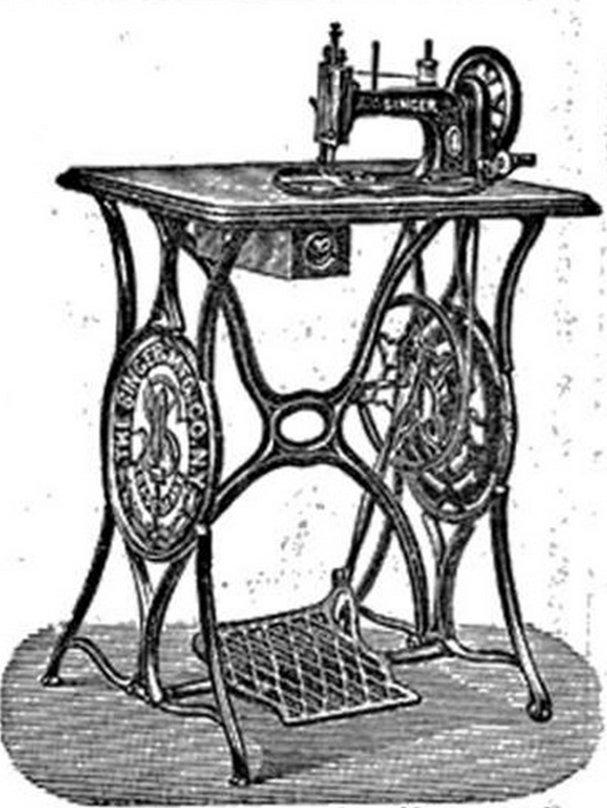
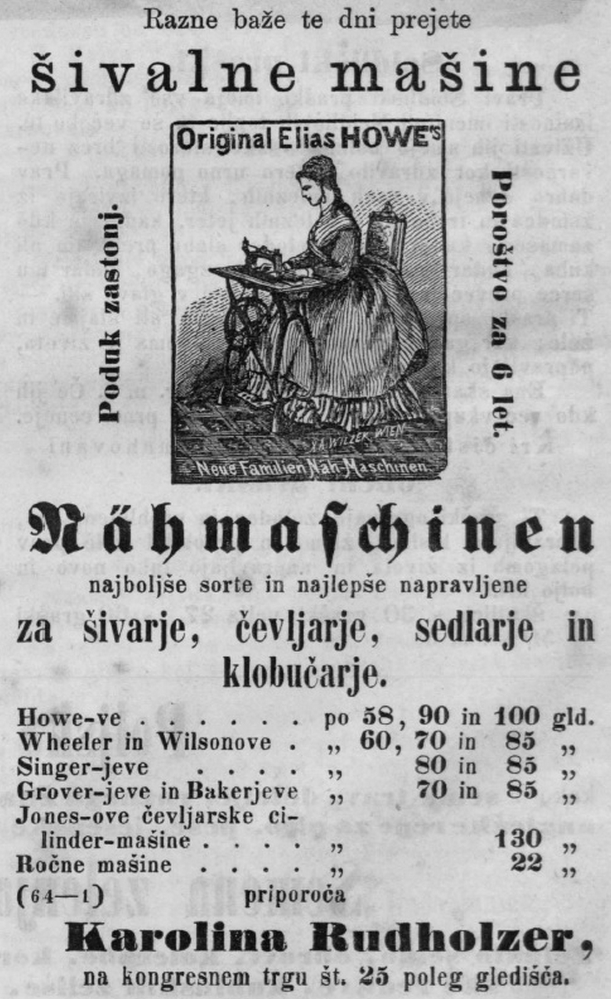

1Članek obravnava vlogo šivalnega stroja v ekonomski in socialni zgodovini. Najprej se osredotoča na dolgotrajno razvojno pot, tržne in oglaševalske prijeme, ki so omogočili, da je šivalni stroj našel mesto v vsakdanjem življenju ljudi. Drugi del prispevka se osredotoča na slovensko ozemlje, razvoj izobraževalnega sistema in posledično na razvoj poklica šivilje.
2Ključne besede: šivalni stroj, šivilja, oblačilna obrt, izobraževanje, gospodinjstvo, avstro-ogrska monarhija, Kraljevina SHS/Jugoslavija, podjetje Singer
1The article focuses on the sewing machine’s role in economic and social history. First, it examines the long development and the marketing and advertising techniques that enabled the sewing machine to find a place in people’s everyday lives. The second part of the article explores the Slovenian territory, the development of the education system, and, consequently, the development of the seamstress profession.
2Keywords: sewing machine, seamstress, dressmaking craft, education, housekeeping, Austro-Hungarian Monarchy, Kingdom of SCS/Yugoslavia, Singer Company
1Šivalni stroj predstavlja predmet, ki je znan in razširjen po vsem svetu. Niso redki ljudje, ki imajo zelo žive spomine na svoje babice ali mame, ki so veliko časa preživele za mizo s šivalnim strojem. Čeprav je bilo najprej mišljeno, da ga bodo rabili v šiviljskih delavnicah, se je stroj zelo hitro po iznajdbi, že v drugi polovici 19. stoletja, začel uporabljati doma. V vsakdanjiku ženske je predstavljal velik napredek v smislu, da so obleke hitreje šivale in hkrati pridobile nekaj časa v primerjavi z ročnim šivanjem. Kljub temu je imela diferenciacija v zgodnji fazi le kratkotrajen vpliv. Šele ko se je to spremenilo v normativ, se je pokazalo, da jim vsakdanjega življenja vseeno ni olajšal. V spremenjenih okoliščinah, ko je bilo žensko delo večinoma znotraj gospodinjstva, je lastnina šivalnega stroja pripomogla k relativno višjemu statusu žensk, ki so ga imele v posesti. Gre za čas, v katerem niso vsi imeli možnosti lastništva šivalnih strojev.
2Šivalni stroj je bil prvo množično označeno »potrošniško« blago in je bil globalno razširjen že pred letom 1914. V času zelo močnega trenda, da se jasno ločita delovno mesto in dom, je bil šivalni stroj prva naprava, ki je prinesla industrijsko revolucijo v dom. Predstavljal je prvi vzdržljiv tehnološko zapleten gospodinjski aparat, ki je našel prostor najprej na trgu v Severni Ameriki, kmalu zatem se je razširil v Evropi, sledili sta Indija in Južna Amerika.1 Šivalni stroj se je tudi na Slovenskem pojavil v drugi polovici 19. stoletja. Trgovina s šivalnimi stroji se je hitro razcvetela, trgovci pa so jih dobavljali iz Združenih državah Amerike, Nemčije, Italije in drugih delov Avstro-Ogrske.
3Šivalne stroje so najprej uporabljali proizvajalci oblačil v svojih delavnicah, vendar so izdelovalci strojev hitro spoznali, da največji potencial predstavlja trg milijonov družin. Ena od glavnih težav je bilo vprašanje, ali in kdaj si družine lahko privoščijo nakup stroja. Želja žensk, da bi imele stroj, je hitro postala dejavnik, na katerega je bilo treba računati, čeprav je razmeroma malo žensk imelo dovolj finančnih sredstev za nakup. Šele z organizacijo oglaševalnih kampanj za distribucijo najprej v Združenih državah Amerike, potem tudi po vsej Evropi ter z uvedbo sistema nakupovanja stroja na obroke so bile počasi odpravljene glavne ovire. Vstop šivalnega stroja na trg domače uporabe je imel daljnosežne posledice.2
4Številne zgodovinske študije so se do sedaj osredotočale na šivalni stroj. Obravnavale so ga s perspektive gospodarske in poslovne zgodovine, zgodovine tehnologije, dela migracij, zgodovine spolov – zlasti v Združenih državah Amerike in v zahodni Evropi. Veliko razprav je posvečenih nastanku stroja, tehnologiji, množični proizvodnji in razvoju oglaševalskih in tržnih strategij. V okviru poslovne zgodovine (business history) je treba opozoriti na narejene študije strategij trženja, ki se jih je posluževalo multinacionalno podjetje Singer.3 V okvirih družbene in kulturne zgodovine so posebnega značaja raziskava ženskega dela kot kombinacije plačanega in neplačanega dela v oblačilni obrti in razširjenosti dela na domu ter raziskave zdravstvenega položaja in politike za delavce v oblačilni industriji. Nove raziskave poudarjajo vpliv spola na oblikovanje trgov dela, na delovna razmerja in delitev dela ter poročajo o prisotnosti žensk v podjetjih in v različnih sektorjih formalnega ali neformalnega gospodarstva.4 Kljub temu še vedno obstajajo vrzeli, ki jih je treba zapolniti, ter veliko vprašanj čaka na odgovore. Vprašanja, ki se nanašajo na delo na domu, sestavo dohodkov gospodinjstva, strategije družin za vstop na trg dela, delo žensk na domu in v okvirih družinskih podjetij, so le nekatera izmed njih.
5Raziskovanju razvoja šiviljstva in predvsem šivalnega stroja v slovenskem zgodovinopisju se je posvečala Katarina Kobe-Arzenšek, ki je obravnavala tehnične vidike pojava in razvoja šivalnega stroja. Raziskovala je oglaševalne tehnike v slovenskem časopisju in delo trgovcev, ki so ponujali šivalne stroje na slovenskem ozemlju v drugi polovici 19. in prvih desetletjih 20. stoletja. Oblačilno obrt oziroma industrijo je obravnavala Sabina Ž. Žnidaršič v knjigi z naslovom Ora et labora – in molči ženska! Opozorila je na položaj žensk na Kranjskem in v okvirih svoje analize posebej izpostavila položaj šivilj. Estera Cerar pa je prikazala pomen mehanizacije procesa šivanja ter na kratko orisala uveljavitev šivalnega stroja na Slovenskem. Nekaj več je bilo napisanega o tekstilni industriji; o položaju delavk in njihovih usodah je pisala Nina Vodopivec v knjigi Tu se ne bo nikoli več šivalo.5
6Pomembno je omeniti slovensko časopisje iz druge polovice devetnajstega in prve polovice dvajsetega stoletja, ki ponuja obilo različnih oglasov, v katerih so ljudem na različne načine poskušali približati uporabo šivalnih strojev. V tem kontekstu se pojavlja vprašanje, kako je šivalni stroj in z njim manjša poraba gospodinjskega časa vplivala na nadaljnji razvoj prostora, ki so ga takrat lahko zavzemale ženske. Gre tudi za čas, ki se je z novo pridobitvijo v delu gospodinjstva uporabil za druge namene. Zanima nas vpliv, ki ga je imel šivalni stroj ne samo v domeni žensk kot uporabnic, ampak tudi širše v okviru socialnega dogajanja, v katerem je takrat imel pomembno vlogo v gospodinjstvu. Vpogled v gospodinjska dela in dela v okvirih doma, v katera večinoma spadajo šiviljska opravila žensk kot dopolnilna dejavnost za pridobitev finančnih sredstev, je zelo težko pridobiti na podlagi neposrednih virov, zato bo v prispevku uporabljena obrtna statistika, ki sta jo sistematično zbirala državni uradni statistični urad Avstro-Ogrske in Zbornica za trgovino, obrt in industrijo na Kranjskem ter kasneje v Kraljevini Srbov, Hrvatov in Slovencev.
1Prvi zabeleženi patent za katerokoli komponento šivalnega stroja je bil podeljen v Londonu leta 1755. Kljub temu je trajalo približno pol stoletja, da je bil razvit praktičen in uporaben šivalni stroj. Na evropskih tleh je bila v izgradnji šivalnika v ospredju Velika Britanija s prvo tovrstno patentno registracijo. Že v prvi polovici 19. stoletja je v tem pogledu izpuščala iz rok vajeti ter na prehodu v drugo polovico tega stoletja prepustila končno vodstvo Združenim državam, vsestransko uspešnim v uvajanju iznajdb v prakso. Zasluga, pridobljena s prispevkom v izgradnji mehanizma, je otoški deželi ostala še naprej neokrnjena.6
2Za razliko od mehanizacije tekstilne industrije, za katero je bila potrebna razmeroma preprosta uporaba mehanske moči za dejanje roke, pri šivanju stroj ni mogel učinkovito podvojiti gibov človeške roke. Namesto preproste zamenjave ročnega šivanja se je razvil popolnoma nov postopek. Ta je vključeval dve niti, nove šive, igle z ušesom na glavi, podajalno napravo in nadzor napetosti niti.7 To so bili razlogi, zakaj se je mehanizacija v šivanju začela dokaj pozno. Šele ogromne količine strojno proizvedenega tekstilnega blaga, ki ga je bilo treba predelati naprej v končne izdelke, so posledično vplivale na začetek razmišljanja ter uvajanja izboljšav tudi v šivanju. S standardizacijo mer in številk ter razvojem konfekcije oblačila niso več izdelovali po meri. Konfekcijo je bilo moč kupiti v trgovinah in salonih, industrijsko izdelana oblačila pa so postala cenejša in dostopnejša. Kot pri večini iznajdb je tudi razvoj šivalnega stroja potekal istočasno v različnih državah. Vsak izum zase je bil pomemben, kot se je pokazalo, tudi del širše sestavljanke, vendar je trajalo precej časa, da se je oblikovala celovita rešitev.8
3Pojav šivalnega stroja kot trajnega »potrošniškega« blaga v petdesetih letih 19. stoletja je predstavljal epizodo ključnega pomena v zgodovini množične proizvodnje. Medtem ko so ure kot funkcionalni in istočasno okrasni elementi že vstopile v gospodinjstva, se je šivalni stroj počasi uveljavljal kot prvi gospodinjski aparat, ki je nadomestil delovno silo. Njegov potencial je postal očiten šele postopoma. Predpogoj, da so vstopili v domove, je bil ta, da so jih ženske sprejele kot nujno potreben aparat. Zapleteno razmerje med domačim in komercialnim šivanjem je imelo velik vpliv na izumitelje, ki so razvijali in izpopolnjevali šivalni stroj. Prvi šivalni stroj z iglo s koničastim očesom je izdelal Walter Hunt v New Yorku med letoma 1832 in 1834, vendar ni nikoli patentiral svojega izuma. To je storil šele Elias Hower ml. leta 1846, ko je prejel prvi patent v Združenih državah Amerike za šivalni stroj s ključavnico. Njegov stroj ni bil brez funkcionalnih pomanjkljivosti. Kljub temu je uspel leta 1846 dokazati, da njegov stroj lahko naredi pet šivov v času, ki je potreben za en ročno izdelan šiv.9
4Večino tehničnih in funkcionalnih težav so odpravili drugi izumitelji tekom naslednjih dveh desetletij. Stroj podjetja Singer, patentiran leta 1851, je začel uporabljati nožno ročico in je sprostil obe roki za delo z blagom med šivanjem. Sčasoma je podjetje Singer pridobilo patent za stroj, ki je omogočal šivanje ukrivljenih in ravnih šivov. Ti so bili lahko izdelani v poljubni dolžini brez ponovnega nastavljanja, lomljenja in gubanja šiva. Podjetje Wheeler in Wilson je kmalu začelo izdelovati majhne, lahke stroje, primerne za lahke tkanine in zlasti za uporabo v gospodinjstvu. Stroj je bil poleg tega cenejši, hitrejši in lažji za uporabo, zahteval je manj servisnih posegov kot drugi stroji na trgu.10

Vir: Inserati iz Ljubljanskega zvona, 1. 8. 1882, 625Na evropskih tleh so poleg začetne iniciative v Veliki Britaniji pomembno vlogo v razvoju šivalnega stroja imeli nemški konstruktorji v drugi polovici 19. stoletja. Max Gritzner iz Durlacha na Badenskem, uspešen podjetnik, kvalificirani tehnik in nadarjen izumitelj, je leta 1879 patentiral dvakratno obračajoči se zajemalec blaga. Drugi izumitelj, enako pomemben, je bil J. Kayser iz Kaiserlauterna. Kayser je leta 1882 uvedel mehanizem za cikcak vbod, model z nihajočim igelnim drogom v kombinaciji z dovodom blaga, kar je še danes temeljni princip za tovrstne šivalnike in nekatere stroje za vezenje.11
6Prvi večji razmah v proizvodnji šivalnih strojev se je zgodil med letoma 1858 in 1859 in je bil posledica deloma nadaljnjega razvoja konfekcijske industrije in standardizacije velikosti oblačil. Na nadaljnji razvoj so gotovo vplivale spremembe v načinu izdelave šivalnih strojev. Ključnega pomena je bil prenos nadzora nad izdelovanjem na podjetnike, ki so začeli razvijati monopol. Do poznih petdesetih let 19. stoletja so stroje izdelovali strojniki oziroma mojstri in krojači, vsak stroj je bil sestavljen iz nekompatibilnih posameznih delov. Vsak ročno izdelan stroj je bil drugačen, sestavni deli vsakega stroja so lahko ustrezali samo stroju, za katerega so bili izdelani, saj noben del ni bil popolnoma enak. Pri takšnem načinu proizvodnje je izdelava vsakega stroja trajala dolgo, stroški dela so bili visoki zaradi odvisnosti od visoko usposobljenih mojstrov, popravila pa omejena in otežena.12
7Kapitalska širitev je zahtevala preoblikovanje sistema proizvodnje, zmanjšanje stroškov ter iskanje novih potencialnih trgov, ki bi spodbudili prodajo. Zanimanje za izpopolnjevanje mehanizmov se je naprej poglabljalo in širilo, izdelovanje strojev pa se je preselilo iz skromnih delavnic v tovarniške prostore. Šele vzpostavitev sistema zamenljivih delov je proizvajalcem omogočila znatno znižanje cen šivalnih strojev. Lahko zaključimo, da so trije dogodki v industriji izdelovanja strojev dodatno omogočili nadaljnji razvoj in širitev: začela se je proizvodnja strojev za tovarne, narejen je bil stroj za domačo uporabo, imenovan »kombinacija«, in izoblikovali so se novi prodajni in marketinški pristopi.13
1Zgodovina oblačilne industrije je v ostrem nasprotju s tipično tekstilno paradigmo industrializacije. Za razliko od tekstilne industrije, ki je centralizirala proizvodnjo, je oblačilna industrija ostala v veliki meri decentralizirana. Vendar tudi zgodovina oblačilne industrije ni sledila preprosti unilinearni poti razvoja.14 Na primer, v slovenskem časopisu Kmetijske in rokodelske novice najdemo opis sprememb pri odevanju ter pomen krojaškega poklica: »moderni obleki se odpirajo nezadržno nova pota in na čast rokodelstvu se mora reči, da nobena stvar ni bolj pospešila demokratizacije človeške družbe, kakor razvoj in razširjanje novodobne obleke. Vsled teh okoliščin je krojaška obrt postala za milijone ljudi eno najvažnejših sredstev pridobivanja.«15
2V času med letoma 1830 in 1880 je bila izdelava oblačil spremenjena in »revolucionirana«. Del tega procesa je bil razvoj šivalnega stroja. Na tisoče patentov je bilo podeljenih od leta 1846 do leta 1895. Kot že omenjeno, izum šivalnega stroja je sledil spremembam v izdelavi oblačil in razvoju tekstilne industrije. Sprejetje stroja in opredelitev njegove uporabe nista bila rezultat le tehnološkega razvoja, ampak tudi tržne tehnike in prodajne strategije podjetij, ki so ga izdelovala. Tehnološke spremembe so sledile spremembam, kot so povečanje ponudbe delovne sile, zmanjšanje stroškov dela in preoblikovanje obrtnega dela. Tudi oblačila so postala blago, ki je pritegnilo kapitalske naložbe. Vključitev krojaških mojstrov v izdelavo konfekcije je spremenila delovni proces in poskušala znižati stroške proizvodnje. V zgodnji fazi razvoja oblačilne industrije so proizvodna orodja ostala praktično enaka kot pri izdelavi oblačil po meri. Pomembna orodja so še vedno bili škarje in igle. Pred šivalnim strojem je bil edini dodatek merilni trak, ki so ga začeli uporabljati leta 1820. Ta je predstavljal tudi prvi korak k standardizaciji krojaških metod. Osebni pristop so počasi nadomestila standardizirana pravila ter postopki za merjenje in pripravo. Na ta način je bilo mogoče ponoviti oziroma uporabiti enake, standardizirane mere, ki so bile zaradi izdelave papirnatih vzorcev dostopne vsakemu krojaču. Standardizirane mere so omogočile prvo podrobnejšo delitev dela v oblačilni industriji: ločitev tistih, ki so risali, in tistih, ki so izrezovali kroje. Čeprav je rezanje ostalo kvalificirano delo, so delavci zdaj izrezovali oziroma sledili vzorcu, ki ga je narisal nekdo drug. Razvoj standardiziranih mer za oblačila ni le odpravil potrebe po usposobljenih krojačih po meri za vsako posamezno stranko, temveč je omogočil tudi množično proizvodnjo oblačil za neznane kupce in množično distribucijo ter prodajo v maloprodajnih trgovinah.16
1Do leta 1870 so proizvajalci šivalnih strojev razvili široko paleto tržnih tehnik, vključno z oglaševanjem v dnevnem časopisju, ponudbo nakupa strojev na obroke, prodajo od vrat do vrat, ponudbo brezplačnih tečajev za usposabljanje strank, dodatnimi popusti in različnimi ugodnostmi. V okviru tega je bil primarni cilj približati šivalni stroj domači uporabi.17 Eden glavnih argumentov je bil ta, da je šivalni stroj odlična naprava, ki prihrani delo in čas. Nagovarjali so predvsem ženske. V Oglasniku, prilogi časopisa Kmetijske in rokodelske novice, je bil že leta 1871 objavljen naslednji citat: »Dobra šivna mašina je dobrota hišni gospodinji, ona jej delo olajša in oddih pripusti.«18 Na račun stroja in osvoboditve od mučnega ročnega šivanja so lahko imele več prostega časa za sebe in tudi za družino. V resnici se je izkazalo, da stroj sploh ne prihrani časa, ampak je, tako kot pri drugih tako imenovanih napravah za varčevanje z delom za dom, samo povečal pričakovanja. Ženske so s šivalnim strojem lahko izdelovale bolj dovršena oblačila z več različnimi šivi, zavihki, obrobami in naborki kot ženske, ki so še vedno uporabljale ročno šivanje. Razkošno ilustrirane modne revije, namenjene ženskam, so postavile nove standarde, medtem ko je razvoj industrije papirnatih vzorcev v šestdesetih letih 19. stoletja zagotovil praktično pomoč za spremljanje novih modnih trendov.19
2Proizvajalci šivalnih strojev so začeli s ciljem pospeševanja prodaje ponujati možnost enostavnega odplačevanja na obroke. Ta način je bil posebej namenjen moškim in ženskam delavskega razreda, ki so si zelo težko privoščili nakup stroja v enkratnem znesku. Eno prvih podjetij je bilo podjetje Singer, ki je leta 1897 oglaševalo plačilo v »gotovini in na kredit«, v naslednjih letih tudi plačevanje na obroke v majhnih zneskih, kar je v praksi pomenilo najem stroja, ki je postal last kupca šele z zadnjim odplačanim obrokom. Isto podjetje je posebej poudarjalo svoje »demokratično in civilizacijsko poslanstvo: zagotoviti tehnologijo strankam skromne sreče«. Uveljavitev posojilnega sistema je bila ključna za razvoj trga za manj premožne člane družbe, v prvi vrsti delavce s skromnejšimi dohodki. Razmerja med mehanizacijo oblačilne industrije in širjenjem šivalnega stroja na različne trge je bilo večplastno, novo kreditno poslovanje podjetij in trgovcev je predstavljalo le enega od faktorjev v teh odnosih. Do konca 19. stoletja so nekateri opazovalci poročali, da so se šivalni stroji začeli pojavljati tudi v revnih gospodinjstvih in oddaljenih ruralnih krajih, kar je bilo mogoče zaradi omenjenih tržnih in oglaševalnih tehnik, še posebej zaradi prizadevanj agentov, ki so hodili tudi v bolj oddaljene kraje.20
3V letih pred prvo svetovno vojno je imel šivalni stroj za ženske delavskega razreda dvojni pomen. Na eni strani je simbolično predstavljal sodobno gospodinjstvo in dostop do novih, modernih in zelo zaželenih dobrin. Na drugi strani je bil del načrta in doprinosa skupnim družinskim dohodkom, brez katerih bi bil omenjeni dostop praktično nemogoč.21
1Natančen podatek, kdaj je bil šivalni stroj prvič pripeljan v slovenske kraje, ni ohranjen, ampak, kot je ugotovila Estera Cerar, prvi članek v slovenskem časopisju, v katerem se nahaja tekst, posvečen šivalnemu stroju, je bil objavljen leta 1863.22 V Kmetijskih in rokodelskih novicah so opozarjali, da bodo gospodinje prihranjen čas lahko uporabile za druge obveznosti ter da »matere bodo sebe in svoje otroke lahko bolje izobraževale, ter podpirale domačo in narodno blagost«.23 Avtor članka je poudaril, da je stroj koristen ne samo gospodinjam, šiviljam in modistkam, temveč tudi različnim obrtnikom, kot so krojači, čevljarji, klobučarji, krznarji, oziroma vsem, ki delajo s šivankami.24 Nekaj let pozneje so bili objavljeni tudi prvi oglasi. V prilogi Kmetijskih in rokodelskih novic, Oglasniku, iz leta 1871 lahko najdemo na isti, zadnji strani dve različni ponudbi. Vincenc Woschnagg se je oglaševal kot zastopnik podjetja Hower in je imel dve trgovini, eno v Ljubljani ter drugo v Trstu.25 Woschnagg je bil tudi lastnik tovarne perila, ki jo je ustanovil leta 1872, v kateri je uporabljal stroje znamke Wheeler in Wilson.26 Druga ponudba je izjemno zanimiva, ker jo je podpisala Karolina Rudholzer, edina ženska med številnimi trgovci in mehaniki, ki so se pojavljali v časopisnih oglasih v nadaljevanju. Trgovina, ki jo je zastopala v oglasu, se je nahajala na Kongresnem trgu v Ljubljani, v svoji ponudbi pa je imela stroje različnih proizvajalcev, in sicer Hower, Wheeler & Wilson, Singer ter Grover in Baker. Oglas Karoline Rudholzer vsebuje več podatkov. Ponudba je bila namenjena za »šivarje, čevljarje, sedlarje in klobučarje«,27 vključevala je tudi brezplačno izobraževanje. Razvidne so tudi cene, ki so se gibale od 58 goldinarjev za najcenejši do 100 goldinarjev za najdražji stroj proizvajalca Hower.28

Vir: Oglasnik, 22. 3. 1871, 32Približno v enakem času so se v časopisih Ljudski glas, Ljubljanski zvon in Slovenski narod začeli pojavljati oglasi Franca Dettela. Franc Dettel je bil trgovec in zastopnik ameriških proizvajalcev. Enako kot Woschnagg in Rudhlozerjeva je deloval v Ljubljani.29 Leta 1882 je ponujal stoje znamk Hower, Wheeler & Wislon in Singer. Kupci so lahko stroj kupili tudi na mesečne obroke od štiri do pet goldinarjev. Dettel je bil prepričan, da je na tak način »mogoče lahko kupiti danes tako v ceno potrebni šivalni stroj«.30 Imel je tudi razvejano mrežo agentov, ki so prodajali stroje po deželi in so poleg tega kupce tudi poučevali šivanje in uporabo stroja.31 V 20. stoletju je na podoben način deloval še en trgovec, in sicer Ignacij Vok, ki je leta 1913 odprl »specializirano trgovino« v Ljubljani. Oglaševal je predvsem stroje podjetja Pfaff. Enako kot skoraj vsi trgovci v obravnavanem času je tudi Vok ponujal brezplačen pouk šivanja, vezenja in celo krpanja perila in nogavic.32 Iz ohranjenih blagajniških knjig iz tridesetih let 20. stoletja je razvidno, da je imel nekaj podružnic v Novem mestu, Celju in Mariboru ter vrsto agentov, ki so prodajali šivalne stroje in kolesa v Dravski banovini.33
3Katarina Kobe-Arzenšek je naredila analizo oglaševanja šivalnih strojev v časopisu Slovenski narod med letoma 1868 in 1920. Podatke je zbrala o 26 različnih trgovcih, podjetnikih in mehanikih. Večina jih je delala oziroma imela trgovino v Ljubljani, le nekateri v drugih krajih, kot so Maribor, Celje, Novo mesto in Gorica. Pri njeni analizi izstopa le Fran Tschinkel, ki je imel poleg trgovine v Ljubljani še podružnico v Kočevju.34 Pomembne so njene ugotovitve o podjetju Singer Co. Podjetje je bilo registrirano leta 1901 in je delovalo do začetka prve svetovne vojne ter je v tem času zasedalo osrednje mesto med oglaševalci šivalnikov. Ljubljanski Singer Co. je podobno kot podružnice v drugih delih sveta ostal zvest obsežnim propagandnim in poučnim zapisom. V njih se je precej ponavljalo, kar je bila po besedah Kobe-Arzenšek očitna težnja po večji psihološki učinkovitosti. Kljub temu so v oglasih vedno prisotni novi podatki, ki govorijo o nadaljnjih uspehih poslovanja. Podjetje iz Ljubljane je ustanovilo mrežo podružnic po celotni Kranjski, tako imenovane filiale je imelo v Postojni, Kočevju, Kranju in Novem mestu. Podobno kot individualni trgovci se je tudi Singer Co. posluževal dela agentov za približevanje izdelkov potencialnim kupcem.35
4Predstavljeni oglasi ponujajo zaključek, da so tudi na Slovenskem uporabljali enake marketinške prijeme kot v Združenih državah in drugih delih Evrope. Trgovci, uradni zastopniki proizvajalcev šivalnih strojev in podjetja so se prilagajali kupni moči prebivalstva ter se kupcem poskušali približati z omogočanjem kupovine na obroke ali najemanjem strojev, kar je bilo predvsem namenjeno šibkejšim članom družbe. Poleg tega so s pomočjo mreže agentov prodirali tudi v bolj oddaljene kraje v deželi.
1V članku z naslovom Ženske v poklicu, objavljenem v časopisu Slovenska gospodinja, je bila zelo nazorno prikazana potreba po temeljnem razmisleku in spremembi tradicionalne dekliške vzgoje. Avtorica je predvsem opozorila na škodljivost pogledov določenih slojev prebivalstva na vključevanje mladih deklet na trg dela. Za njo je bilo nesprejemljivo to, da so poklici – šivilje, učiteljice, poštne upraviteljice – predstavljeni kot nujno zlo. Zagovarjala je idejo o svobodni izbiri poklica ter da si ženske lahko poiščejo službo zunaj svojega gospodinjstva. Sprememba dekliške vzgoje je bila pri tem ključnega pomena.36 Na podlagi predstavljenega lahko vidimo, da so bili nasprotujoči si pogledi še vedno zelo aktualni v prvem desetletju 20. stoletja.
2Kljub temu se je šivanje kot obrt in poklic začelo uveljavljati proti koncu 19. stoletja. Ženske so šele v tem obdobju pridobile možnost za samostojno opravljanje dela v različnih obrteh, med drugim tudi v šiviljstvu. Za tako imenovane rokodelske obrti je bilo treba pridobiti ustrezno izobrazbo, ki je bila razvidna iz spričevala o zaključnem izpitu. Dolgo časa je bila krojaška obrt, ki je vključevala strokovno usposabljanje, domena moških. Ženske so se v okviru tradicionalnega generacijskega prenosa znanja učile šivati, plesti, vesti in skrbeti za domače perilo, učile so se krpanja oblek in prekrojevanja. Glavni predpogoj za to spremembo je bila posodobitev obrtne zakonodaje, ki je omogočila ženskam, da so samostojno vodile delavnice in zaposlovale pomočnice ter vajenke.37 Na splošno je do največje spremembe obrti prišlo z novo obrtno zakonodajo leta 1859. Dokončno je bila odpravljena monopolizacija tržišča in opravljanje obrti je postalo v večini primerov svobodno.38 Šivanje in usposabljanje za delo na šivalnih strojih je postalo del rednega učnega načrta v dekliških šolah, kot sta bili na primer Državna ženska obrtna šola39 in Mestni dekliški licej v Ljubljani.40
3Na podlagi podatkov o izobraževanju ter analizi uradnih državnih statističnih podatkov o poklicih lahko pridobimo vpogled v razvoj poklica šivilje na Slovenskem. Čeprav je bila ženska v splošni percepciji družbenega reda posvečena družinski sferi in zadolžena predvsem skrbi za otroke, dom in gospodinjstvo, je bilo pri določenih nižjih družbenih slojih nujno usklajevanje z gospodarskim udejstvovanjem. Možnost za zaposlitev izven doma, ki je prinesla stalen in stabilen priliv dohodkov, je počasi spreminjala socialno in gospodarsko vlogo žensk. Za žensko delo je dolgo časa veljalo, da predstavlja zgolj podporno dejavnost in je bilo posledično tudi drugotnega pomena.41 Pri tem je treba žensko delo razumeti kot zaposlitev oziroma plačano pridobitno delo, ki se je praviloma opravljalo izven doma in je predstavljalo nasprotje neplačanem delu v gospodinjstvu. Vendar je treba poudariti, da poklicna statistika in številke ne ponazarjajo ženske pridobitnosti v celoti.42
4Neposredni podatki o zastopanosti in razširjenosti pridobitnega ženskega dela na domu v okviru obravnavane tematike so zelo težko izsledljivi. Oglasi v časopisih nam ponujajo informacije zgolj o delovanju trgovcev, njihovih agentov in mehanikov, ne vsebujejo pa dejanskih podatkov o njihovih strankah, ki so res kupile in uporabljale stroj doma. Poklicna statistika pogosto ne razkriva posebnih gospodarskih informacij za ženske – soproge, hčerke, sestre ali druge članice družine. Kljub temu so ženske velikokrat sodelovale pri obrtni ali trgovski dejavnosti, organizirani na družinski osnovi ali izven nje.43 Med temi oblikami so se zagotovo pojavljale dejavnosti v okvirih šiviljstva kot obrti oziroma poklica.
5Za razvoj šiviljstva so bile ključnega pomena obrtne šole. V Ljubljani je delovala Umetno-obrtna šola, ki je bila leta 1911 prestrukturirana in preimenovana v Žensko obrtno šolo. Od takrat dalje je delovala v okviru Državne obrtne šole, v času po prvi svetovni vojni je bila del Tehniške srednje šole. Šola je imela tri oddelke, in sicer za šivanje perila, za izdelovanje obleke in za vezenje. Naloga teh oddelkov je bila, da dekleta praktično usposobijo za opravljanje poklica. Izobraževanje je trajalo dve leti z možnostjo podaljšanja še za dodatno leto praktičnega »ateljerskega tečaja za aboslventinje«. Med pomembne predmete so spadali krojno risanje, krojenje in šivanje oblek ter praktični pouk. Zaključno spričevalo oddelka za šivanje oblek je imelo enko vrednost kot pomočniško pismo po zaključenem pomočniškim izpitu, kar je omogočalo opravljanje šiviljskega poklica za izdelovanje otroških in ženskih oblek. Poleg rednega pouka je šola ponujala specialne dodatne in večerne tečaje.44 Poleg Ženske obrtne šole so dekleta imela priložnost obiskovanja praktičnega pouka in usposabljanja za delo na šivalnih strojih v Mestnem dekliškem liceju v Ljubljani. Licej je v šolskem letu 1912/13 imel pet šivalnih strojev, ki so jih uporabljali kot učila pri predmetu ročna dela v tretjem letniku.45
6Poleg šolskega izobraževanja za razvoj obrti na splošno je bilo pomembno delovanje Urada za pospeševanje obrti v Ljubljani kot državne ustanove. Prve pobude in ideje o ustanovitvi takšni ustanove so prišle z Dunaja že na prelomu iz 19. v 20. stoletje, ampak je bil urad dokončno ustanovljen šele leta 1910. V okviru nove države – Kraljevine Srbov, Hrvatov in Slovencev – je bil Urad za pospeševanje obrti preoblikovan v podružnico Državnega zavoda za pospeševanje obrti in industrije iz Beograda. Do nove strukturne spremembe je prišlo z letom 1929, ko je bil spet preoblikovan v samostojen urad v okviru banovinske uprave. Kljub realizaciji številnih tečajev je delovanje urada po letu 1922 začelo pešati. Zaradi tega je Zbornica za trgovino, obrt in industrijo leta 1928 ustanovila svoj zavod za pospeševanje obrti. Novi zavod je do konce leta 1939 pripravil povprečno 25 do 30 tečajev na letni ravni, na katerih je sodelovalo med 600 in 700 udeležencev. Obe organizaciji sta skrbeli za strokovno izobraževanje obrtnikov, vajencev in pomočnikov.46
7V zadnjih desetletjih 19. stoletja in v prvem desetletju 20. stoletja so »ženskim« poklicnim skupinam v industriji in obrti pripadale tekstilna industrija in obrt, papirna in usnjarska industrija in obrt, lesna industrija in obrt, živilska industrija in obrt, industrija in obrt pijač, sladil, prenočevanj ter oblačilna obrt. V poklicni skupini oblačilna industrija in obrt so bile ženske zastopane predvsem v treh od osmih poklicih, in sicer kot izdelovalke perila, krojačice in šivilje in izdelovalke oblek ter popravljavke oblačil in oblek.47
8Sabina Ž. Žnidaršič je v knjigi Ora et labora – in molči ženska!, v kateri je analizirala statistične podatke iz poklicne statistike Avstro-Ogrske, ugotovila, da je bila oblačilna obrt na Kranjskem, slovenskem Štajerskem in Koroškem, kot tudi na celotnem slovenskem ozemlju ena od najmočnejših panog glede na število vseh aktivnih. Podobno je bilo tudi na Primorskem in Goriškem, kjer je oblačilna obrt zaposlovala relativno več ljudi kot v drugih deželah. Kljub temu je prav oblačilna obrt, čeprav najmočnejša neagrarna panoga v vseh slovenskih deželah, imela najbolj skromno rast zaposlenih. Po letu 1890 je njihovo število povsod padalo. Šele pri zadnjem popisu prebivalstva, ki ga je naredila avstro-ogrska monarhija, je bilo opazno skromno povečanje.48
9Natančnejši pregled poklicne statistike pokaže, da so ženske v letu 1890 v veliki večini pripadale poklicni skupini izdelovalcev perila, približno 78 % vseh žensk je bilo v oblačilni obrti. Število v tej skupini se je drastično zmanjšalo pri naslednjem popisu, ko je doseglo le 5 % vseh žensk. Pri zadnjem popisu leta 1910 se je odstotek rahlo zvišal na 14 %. Istočasno se je leta 1900 močno povečalo število žensk v poklicni skupini krojačev, šivilj in izdelovalcev oblek. Njihovo število se je potem za odtenek zmanjšalo na račun drugih dveh skupin. V skupini, ki se je ukvarjala s popravili perila in oblek, se je delež gibal med 10 % in 25 %. Na splošno se je stanje izboljšalo leta 1910, ko so se absolutne številke povišale.49 Treba pa je poudariti, da je bilo za pridobitne žensk v poklicnem razredu industrije in obrti značilno, da so bile dejavne v poklicnih skupinah, povezanih z manipulacijo raznih vrst blaga, kot tudi to, da so opravljale le manjši del poklicev.50
10Zbornica za trgovino, obrt in industrijo je tudi v času Kraljevine Jugoslavije zbirala podatke od obrtnih združenj, med drugim združenj krojačev in krojačic. Ohranjeni so podatki za leto 1934, ko je 48 različnih združenj poslalo svoje podatke. V omenjenem letu jih je imelo status obrtnika, ki je opravljal krojaško ali šiviljsko dejavnost, 6164. Od teh je imela status mojstra/mojstrice dobra polovica ali 52 %, preostalih 48 % jih je bilo razdeljenih med pomočnike in pomočnice (20 %) ter vajence in vajenke (28 %). V okviru spolne strukture so bili mojstri in mojstrice približno enakomerno razdeljeni, za slaba dva procenta je bilo več krojačev. Večja razlika je bila pri pomočnikih. V tej kategoriji je bilo 59,1 % moških in 40,9 % žensk. Vajenke in vajenci so predstavljali edino kategorijo, v kateri je bilo zastopanih več šivilj kot krojačev, in sicer 31,3 % moških, v primerjavi z 69,7 % žensk.51
11Veliki problem v obdobju gospodarske krize tekom tridesetih letih 20. stoletja je bilo povečanje števila obrtnikov, ki so delali na črno. V tem času so različna združenja obrtnikov oblačilnih strok redno poročala o porastu tako imenovanega šušmarstva. Številni obrtniki so iskali rešitev iz slabega položaja, predvsem zaradi visoke davčne obremenitve. V velikem številu so se izpisali iz obrtnega registra. V letu 1934 je Združenje obrtnikov oblačilnih strok v Ljutomeru poročalo o dvajsetodstotnem zmanjšanju uradno registriranih obrtnikov. Padec števila zaposlenih je spremljal tudi petindvajsetodstotni padec cen izdelkov. Vzrok za slab položaj krojaške in šiviljske obrti so videli v konfekcijskem podjetju Tivar ter v trgovcih, ki so nabavljali blago pri šušmarjih po izjemno nizkih cenah. V Sloveniji se je s šušmarstvom ukvarjalo na tisoče ljudi oziroma skoraj polovica uradno registriranih obrtnikov. Ta pojav ni bil nov, oblast se je soočala s podobnimi problemi tudi v prejšnjih obdobjih. V tridesetih letih se je obseg dela na črno povečal do te mere, da je resno ogrožalo položaj uradno prijavljenih obrtnikov. Oblast je sicer večkrat prisluhnila težavam obrtnikov, ampak v resnici ni dosledno preganjala tistih, ki so kršili pravila. V poročilu omenjenega združenja je bilo zapisano, da je bilo ovadenih 135 obrtnikov oblačilne obrti, od tega jih je bilo 75 % dejansko kaznovanih, preostali četrtini niso mogli dokazati kršitev. Oblast je sicer prisluhnila obrtniškim težavam in jemala na znanje tožbe obrtnih združenj, ki so v imenu obrtnikov terjala dosledno preganjanje šušmarstva, vendar ni kazala velike vneme pri zatiranju, ker se je z delom na črno tudi blažilo socialne stiske ne tako majhnega dela prebivalstva.52
1Iznajdba šivalnega stroja v sredini 19. stoletja je v veliki meri zaznamovala socialno in gospodarsko zgodovino širom sveta. Razvojna pot je bila dolgotrajna, vendar je stroj zelo hitro našel svoje mesto tako v krojaških delavnicah kakor tudi v domovih ljudi. Pri tem je imel pomembno vlogo zasuk pri podjetnikih, ki so prevzeli skrb za proizvodnjo in tudi oglaševanje. Ko je bila premagana glavna prepreka, visoka cena izdelave, je šivalni stroj postal prvi hišni aparat, ki je industrializacijo prinesel v domove. Široko uporabo stroja je bilo mogoče vpeljati le takrat, ko so predvsem ženske odkrile potencial in začele izražati željo po nakupu. Takrat je šivalni stroj vstopil na trg domače uporabe.
2Na slovenskem se je šivalni stroj pojavil že v šestdesetih letih 19. stoletja in se je zelo hitro razširil med različnimi podjetniki, predvsem trgovci, ki so na različne načine poskušali izkoristiti potencial novega izuma. Čeprav so bili oglasi na začetku namenjeni širši publiki, so se kot ciljna publika zelo hitro začele pojavljati ženske. Z izjemo Karoline Rudholzer je bila trgovina s stroji v moški domeni. Poleg prodaje so se trgovci ukvarjali tudi z manjšimi popravili, ker so neredko opravljali tudi poklic mehanikov. Neredko so imeli v ponudbi poleg šivalnih strojev še kolesa in tipkarske stroje. Oglaševalne tehnike so bile enake kot v drugih državah, tudi sistem odplačil na obroke je odigral pomembno vlogo pri približanju izdelka potrošnikom.
3V času avstro-ogrske monarhije so imele ženske vidno vlogo v oblačilni obrti na celotnem slovenskem ozemlju. Podatki kažejo podobno sliko tudi v času Kraljevine SHS/Jugoslavije, čeprav so bile rokodelske obrti v tridesetih letih v globoki krizi in zatonu. Za nove naraščaje v oblačilni obrti so skrbeli na več različnih načinov. Do izobrazbe so lahko prišli v okviru šolskega sistema ali v okviru dela Urada za pospeševanje obrti, ki je redno organiziral krojaške tečaje. Razlika je bila le v tem, da so v šolah deklice pridobivale tudi splošno izobrazbo, tečaji pa so bili namenjeni izpopolnjevanju že usposobljenih krojačev in šivilj, ki so že opravljali svoj poklic. Šivalni stroj je zaznamoval življenje tudi na Slovenskem, o tem priča poklicna statistika. Poklic šivilje je šel tudi skozi nekaj razvojnih poti. S spremembami v zakonodaji so ženske pridobile možnost opravljati poklic šivilje samostojno, kasneje so lahko imele svoje modne salone. Velika gospodarska kriza tridesetih let 20. stoletja, visoke davčne obveznosti in razvoj konfekcijske proizvodnje so globoko zaznamovali oblačilno obrt.
* Članek je nastal v okviru raziskovalnega programa P6-0280 Ekonomska, socialna in okoljska zgodovina Slovenije, ki ga sofinancira Javna agencija za znanstvenoraziskovalno in inovacijsko dejavnost Republike Slovenije iz državnega proračuna.
* Dr., asistentka z doktoratom, Inštitut za novejšo zgodovino, Privoz 11, SI-1000 Ljubljana, natasa.henig@inz.si; ORCID: 0000-0003-4889-5061
1. Papastefanaki, Sewing at Home, 74.
2. Putnam, The Sewing Machine, 278. Papstefanovski, Sewing at Home, 78.
3. Davies, Peacefully Working, 299–325. Godley, Selling the Sewing Machine.
4. Npr. Coffin, Credit, Consumption and Images, 749–83. Burman, The Culture of Sewing. Papstefanovski, Sewing at Home, 74–95.
5. Kobe-Arzenšek, Prispevek k zgodovini, 338–44. Kobe-Arzenšek, Ponudba šivalnikov, 301–10. Žnidaršič-Žagar, Ora et labora. Vodopivec, Tu se ne bo nikoli več šivalo.
6. Kobe-Arzenšek, Prispevek k zgodovini šivalne naprave, 513, 515.
7. Barm, "If I Didn’t Have My Sewing Machine", 30.
8. Cerar, Šivalni stroj, 447, 448.
9. Putnam, The Sewing Machine, 269. Barm, "If I Didn’t Have My Sewing Machine", 31.
10. Prav tam, 32.
11. Kobe-Arzenšek, Prispevek k zgodovini šivalne naprave, 513.
12. Barm in Klepp, "If I Didn’t Have My Sewing Machine", 32, 34.
13. Kobe-Arzenšek, Prispevek k zgodovini šivalne naprave, 515. Barm in Klepp, "If I Didn’t Have My Sewing Machine", 32, 34.
14. Barm in Klepp, "If I Didn’t Have My Sewing Machine", 38, 39.
15. Kunc, O poklicu in o vzgoji v rokodelstvu, 403.
16. Barm in Klepp, "If I Didn’t Have My Sewing Machine", 25, 28, 29.
17. Prav tam, 37.
18. Oglasnik, 22. 3. 1871, 3, Šivalne mašine.
19. Barm in Klepp, "If I Didn’t Have My Sewing Machine", 37.
20. Papstefanovski, Sewing at Home, 82, 83. Coffin, Credit, Consumption and Images, 752, 756, 757.
21. Coffin, Credit, Consumption and Images, 783.
22. Cerar, Šivalni stroj, 454.
23. Kmetijske in rokodelske novice, 23. 12. 1863, 408, Šivalni stroj ali šivne mašine.
24. Prav tam.
25. Oglasnik, 22. 3. 1871, 3, Šivalne mašine.
26. Cerar, Šivalni stroj, 454.
27. Oglasnik, 22. 3. 1871, 3, Razne baže te dni prejete šivalne mašine.
28. Prav tam.
29. Kobe-Arzenšek, Ponudba šivalnih strojev, 132.
30. Inserati iz Ljubljanskega zvona, 1. 8. 1882, 62, Fran Dettel.
31. Ljudski glas, 1. 10. 1882, 8, Šivalni stroji. Inserati iz Ljubljanskega zvona, 1. 8. 1882, 62, Fran Dettel.
32. Kobe-Arzenšek, Ponudba šivalnikov v oglasih, 306.
33. SI AS 480, šk. 2, Krajevni register za stroje. 1936.
34. Kobe-Arzenšek, Ponudba šivalnih strojev, 132. Kobe-Arzenšek, Ponudba šivalnikov v oglasih, 302.
35. Kobe-Arzenšek, Ponudba šivalnikov v oglasih, 304.
36. Dobova, Ženske v poklicih, 68.
37. Cerar, Šivalni stroj, 454.
38. Lazarević, Obrt, 18.
39. Spominski zbornik Slovenije, 191.
40. Macher, VI. izvestje Mestnega dekliškega liceja, 17, 19, 33.
41. Lazarević, Gospodarska dejavnost žensk, 9, 10, 15.
42. Studen, Dobra meščanska gospodinja, 91. Kalc, O vidnosti in nevidnosti ženskega dela, 37.
43. Prav tam, 30, 31.
44. SI AS 63, šk. 3, Državna obrtna šola v Ljubljani: Ženska obrtna šola. Učni načrt Ženske obrtne šole na Tehniški srednji šoli v Ljubljani, 1921. Hojan, Ema Arko, 470.
45. Macher, VI. izvestje Mestnega dekliškega liceja, 17, 19, 33.
46. Spominski zbornik Slovenije, 194. Lazarević, Temeljne razvojne poteze, 21.
47. Fisher, Družba, gospodarstvo, prebivalstvo, 114, 115.
48. Žnidaršič, Ora et labora, 162.
49. Berufstatistik, 31. 12. 1890, 72; 31. 12. 1900, 103; 31. 12. 1910, 44.
50. Žnidaršič, Ora et labora, 162
51. SI AS 448, šk. 152-2, Število mojstrov in pomočnikov po strokah, 1935; Seznam vajencev po strokah, 1935.
52. SI AS 448, šk. 152–2, Združenje obrtnikov oblačilnih strok v Ljutomeru, 27. 10. 1935. Lazarević, Temeljne razvojne poteze, 24, 25.